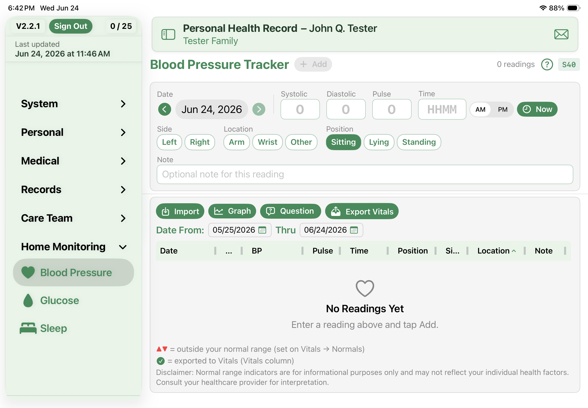

Meet the Blood Pressure Tracker
The Blood Pressure Tracker gives you one place inside PHR to log your readings and watch them over time — right alongside the rest of your health records, no separate app required.

Logging a reading
Entry is built to be quick, since you'll do it often. Each reading takes a date, a time, and your systolic and diastolic numbers, plus a few optional touches:
- The date carries forward from your last entry, so a run of same-day readings is just a tap.
- Time takes a four-digit value with AM/PM, or a Now button when you're entering it on the spot.
- Note which arm and what position you were in, and add a short note if you want.
- Adding several at once? They batch up and commit together when you tap Add.
Your readings land in a diary you can sort and resize by date, value, time, or source, color-coded against your normal range. A small icon shows whether each one was typed by hand or imported.
Seeing the trend
Numbers in a list only tell you so much, so the tracker also draws them out. The graph shows a line trend of your systolic and diastolic with your normal range shaded behind it, a logbook that groups readings by time of day, and an in-range summary for each number. Tap any point to pull up the exact readings behind it.
Sending readings to your Vitals
When you're ready, tap Export Vitals to copy readings into your main Vitals — each reading goes over only once, and a green check marks the ones that have. The arm, position, and note travel with them. Change your mind? You can reverse a whole export from Loads, and editing or deleting a reading in the tracker keeps its Vitals copy in step.
Where to find it
The Blood Pressure Tracker lives in the Home Monitoring group in the sidebar, next to Glucose and Sleep. Your normal range comes from your Vitals settings, so the colors and summaries match the rest of the app.